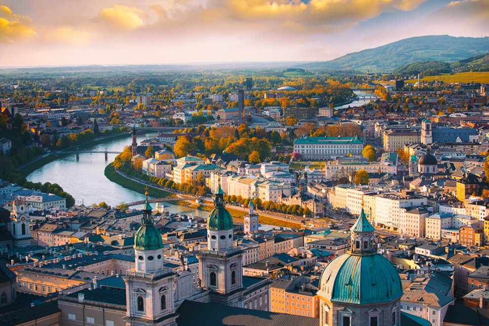

Gostaria muito de poder visitar Viena, pois é uma cidade cheia de história e arte. Repleta de cultura, apresenta como o país se formou, a família real, e principalmente algo que eu sou encantada: A arte, Viena é uma cidade repleta de museus, quais que representam e contam a história artística da Austria, sem contar com as bibliotecas e cafés maravilhosos!!
"Cause when you realize, Viena waits for you..."
Lugares que você precisa visitar em Viena!!
Palácio de Schonbrunn
Antiga residência da família real Austriaca, com jardins deslumbrantes e salões magníficos o lugar ideal para conhecer um pouco da história do país!
Catedral de Santo Estevão
Ícone de Viena, esta catedral impressiona os turistas pela sua arquitetura detalhada e pela vista panorâmica da cidade através da sua torre principal.

Palácio de Belvedere
O palácio é um conjunto arquitetônico da era Barroca de Viena, inclui dois palácios, ambos se chamam Belvedere, sendo eles o Superior e o inferior. Com um jardim estonteante, o mesmo funciona atualmente como museu de arte, obrigando algumas das obras mais importantes da história Austriaca, como "O beijo" de Gustavo Klimt!